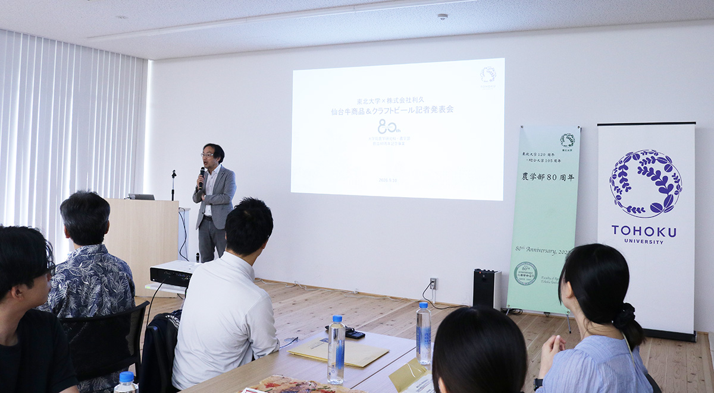
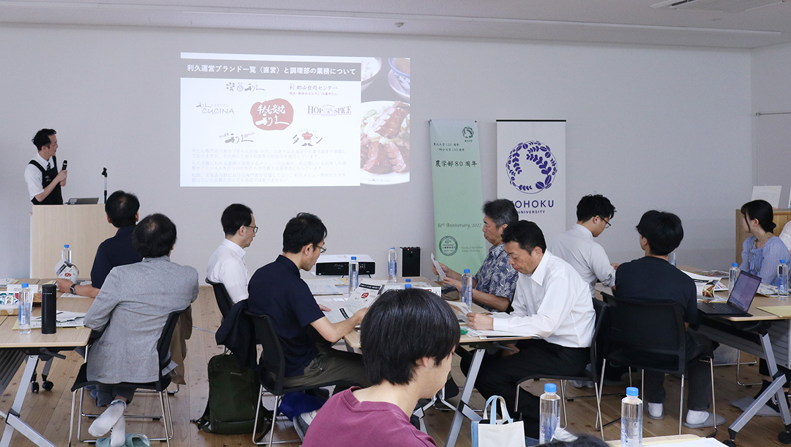
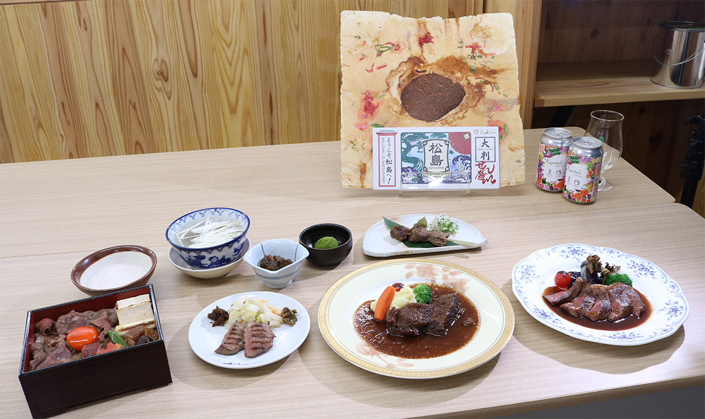

開催報告
2026年9月10日（木）、東北大学環境科学研究科SHOKU Labにおいて、東北大学大学院農学研究科と株式会社利久による新商品のお披露目・試食会を開催しました。 当日は、学内関係者および報道関係者を対象に、取組の紹介と仙台牛商品の試食、クラフトビールの試飲を行いました。
今年度は、これまでのビールの共同開発に加え、新たに資源循環の取組を開始しました。大学産のお米をビールに活用し、醸造の過程で生じるビール粕を川渡フィールドセンターで飼育する牛の飼料として利用。 さらに、育てた牛の牛肉を利久の商品として提供することで、大学のフィールド資源を生かした循環型の取組につなげています。



販売情報
- 商品
-
「Kawatabi Cold IPA」第4弾
川渡フィールドセンター産仙台牛を使用した5商品 - 販売開始日
- 2026年9月11日（金）
- 販売店舗
- 株式会社利久の飲食店舗等
なお、商品の売上の一部は東北大学基金に寄附され、本学の教育・研究に活用されます。